How to use Sola66 Apologetics
A short illustrated guide to everything the app does. Read it from the top, or jump to the part you need. The red numbers on each picture match the steps beside it.
Each part says where it applies: Computer Mac and Windows Phone Android and iPhone Both
1. How Sola66 works Both
Sola66 is a study library of arguments, organized like this:
- Religions & worldviews (for example Islam or Christianity) contain…
- Topics (for example “Resurrection of Jesus”), which contain…
- Arguments, each with a summary, the argument itself, counterarguments, sources, tags and other names it’s known by.
- You write on your computer. The Mac and Windows apps are where you add and edit everything.
- Your phone receives the library. Pair your phone with your computer once; after that, the phone fetches the latest library over your own Wi-Fi whenever you ask it to. Phones read, search and copy, but don’t edit.
- Everything stays yours. There’s no account and no cloud. Your library lives on your own devices, and your personal notes and favorites never leave the device they’re on.
A new install starts with two empty religions, Islam and Christianity, ready for your topics. You can rename or delete them, and add up to eight in total.
2. Finding your way Both
Home shows your religions and worldviews. Tap or click one to see its topics, then a topic to see its arguments.
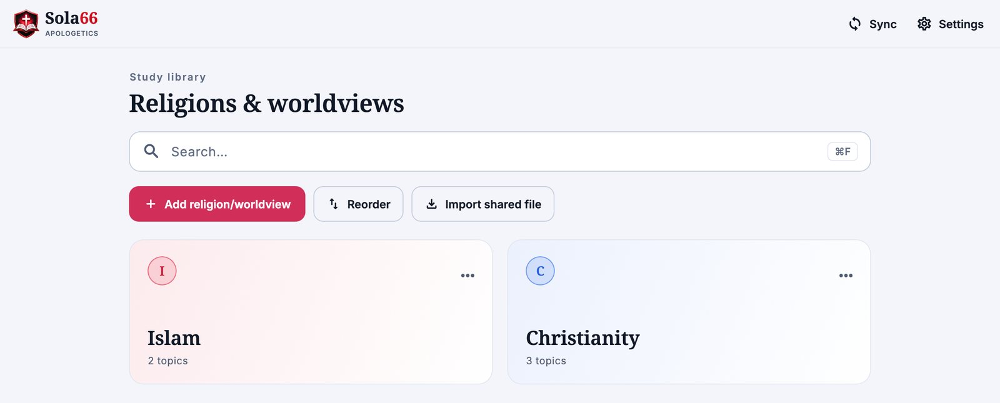
- 1A religion or worldview. Open it to see its topics.
- 2Search looks through the whole library (see below).
- 3Sync pairs your phone and sends it the library (part 5).
- 4Settings: theme, text size, backups, help and more.
- 5Computer Add religion/worldview (part 4).
- 6Computer Import shared file from a friend (part 6).
The Sola66 name at the top left always takes you back to Home, and the arrow beside it goes back one step. The small links above each page title (for example Home › Christianity) take you straight back to any level.
Topics and arguments
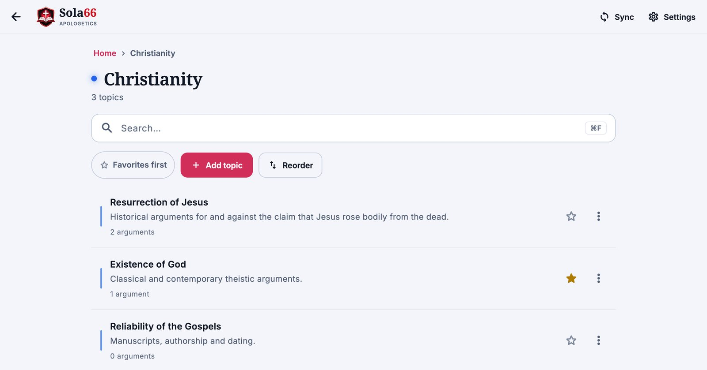
- 1A topic. Open it to see its arguments. The arguments list looks the same, with the argument’s summary under each title.
- 2The star adds a topic or argument to your favorites. Favorites are kept on each device separately.
- 3Favorites first lists your starred items at the top. It turns gold when it’s on.
- 4Computer The ⋮ menu renames, moves, shares or deletes. You can also right-click any item.
Searching
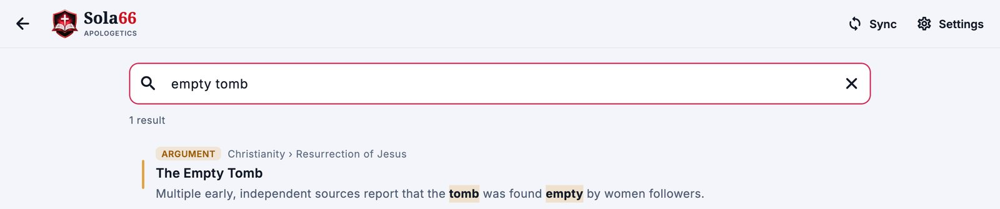
- Search covers topic names and descriptions, and everything in an argument: title, summary, text, tags, other names, counterarguments and sources. It also finds your own personal notes.
- Capital letters don’t matter, but accents do: “Kalam” won’t find “Kalām”.
- Results with your exact words in order come first. Tap a result to open it.
- On a computer, press ⌘F (Mac) or Ctrl+F (Windows) to start searching from Home or any list.
3. Reading an argument Both
An argument opens with its summary and the argument itself, then the counterarguments and sources.
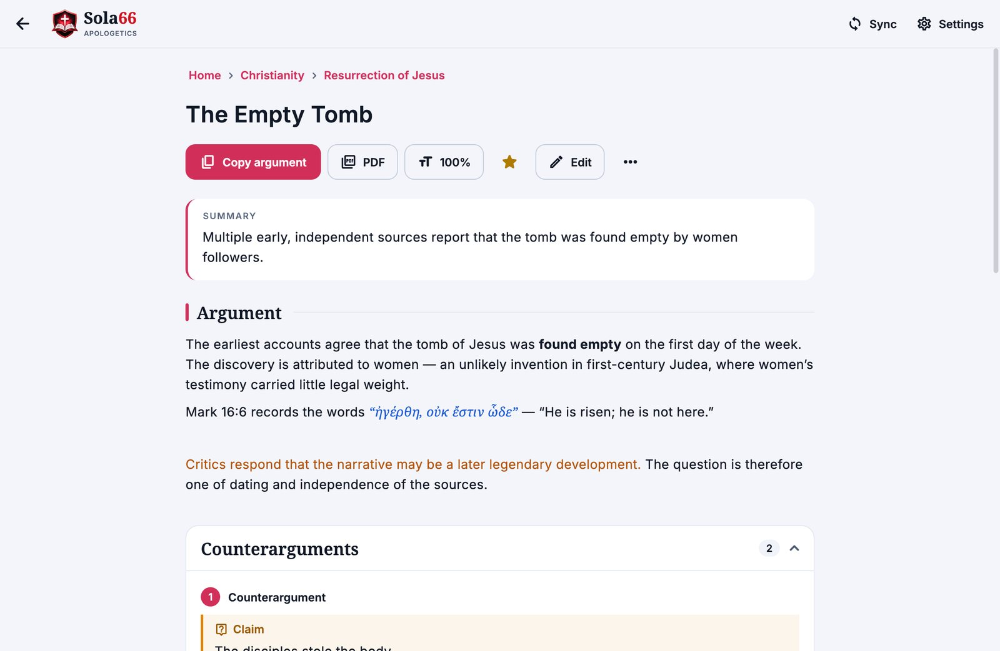
- 1Copy argument copies the whole argument as plain text, ready to paste into a message or document: title, summary, argument, counterarguments and sources. Your personal note isn’t included.
- 2PDF shows a print-ready page you can print, share or save.
- 3Text size makes argument text larger, from 100% to 200%, on this device only.
- 4The star adds the argument to your favorites.
- 5Computer Edit opens the argument for editing.
- 6Computer ⋯ moves the argument to another topic, shares or deletes it.
Counterarguments and sources
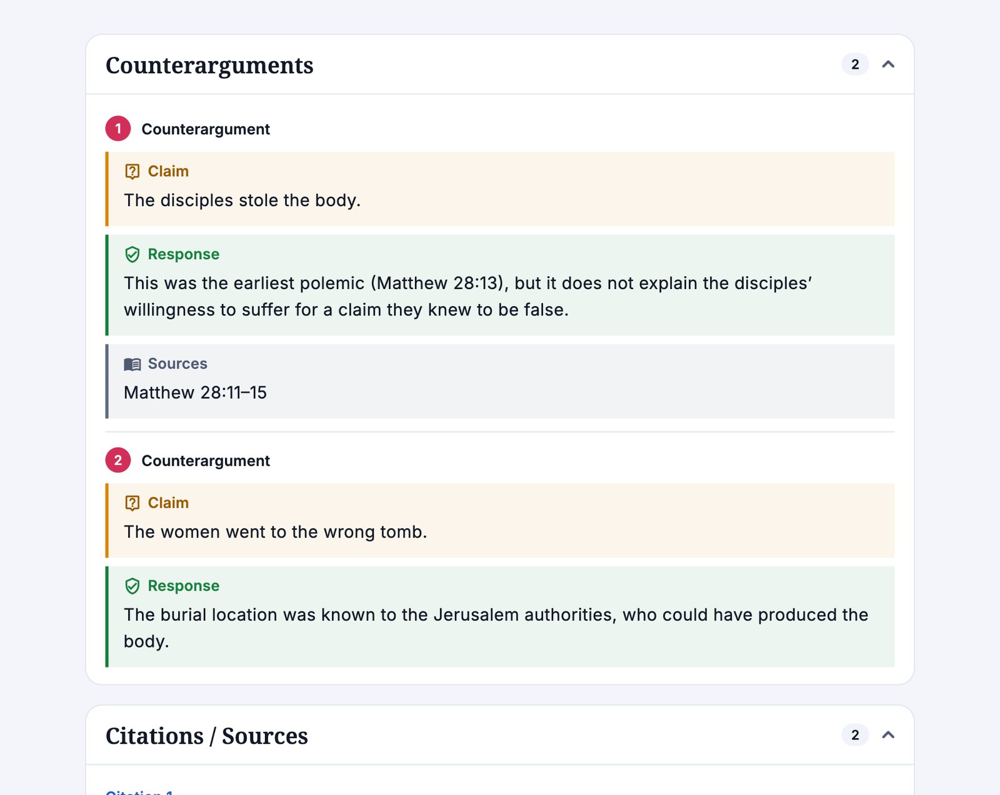
Each counterargument is a numbered exchange:
- Claim: the objection someone might raise.
- Response: how to answer it.
- Sources: where the answer comes from (optional).
Below them, Citations / Sources lists the references for the whole argument, with quotations and web links. Links open in your browser only when you tap them.
Tap a section’s heading to fold it away; the app remembers your choice.
Your personal note, tags and other names
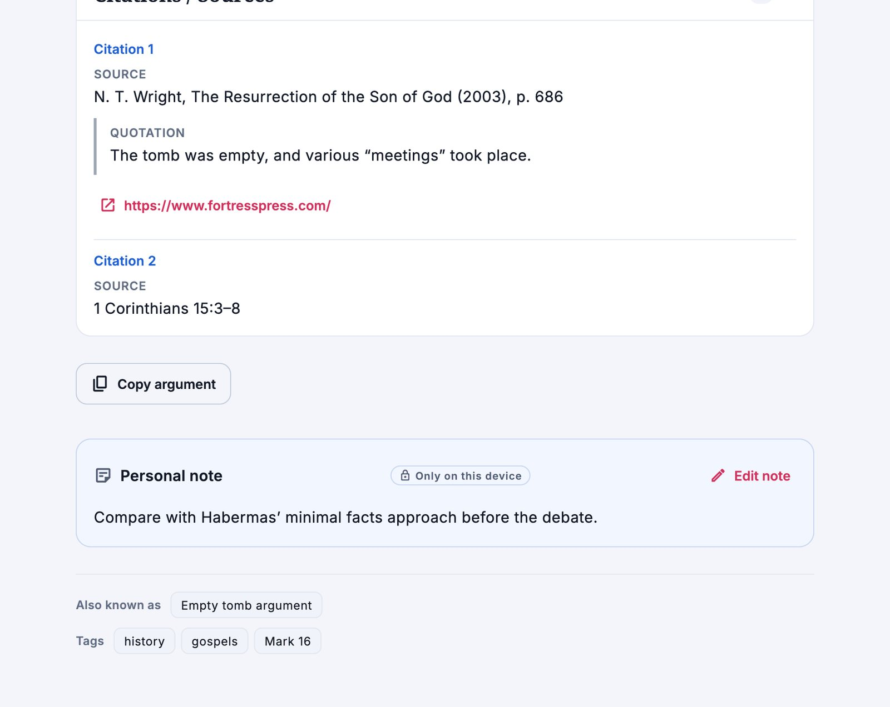
- 1Personal note. Choose Add note to write your own thoughts on the argument. Notes stay only on this device: they’re never copied, put in PDFs, shared or sent to your phone.
- 2Also known as lists other names for the argument, and Tags group related arguments. Both are searchable.
On your phone
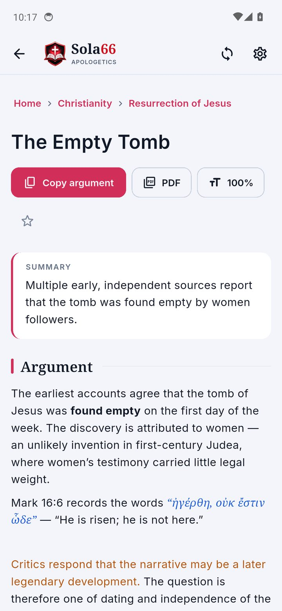
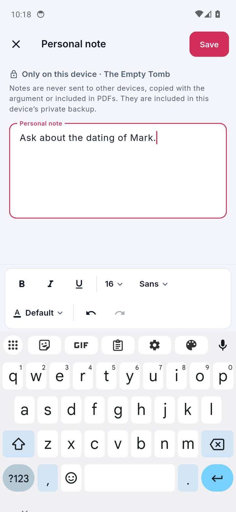
Phones show the same argument, with Copy argument, PDF, text size and the star. You can write personal notes on your phone too; they stay on the phone.
4. Writing on your computer Computer
All writing happens in the Mac or Windows app. Your phones get the changes the next time they update.
Adding religions, topics and arguments
- A religion or worldview: on Home, click Add religion/worldview, type its name and click Add. You can have up to eight.
- A topic: open a religion, click Add topic, give it a name and, if you like, a short description.
- An argument: open a topic and click Add argument. The editor opens (below).
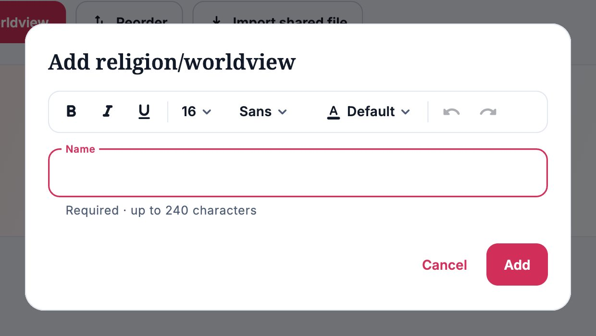
The argument editor
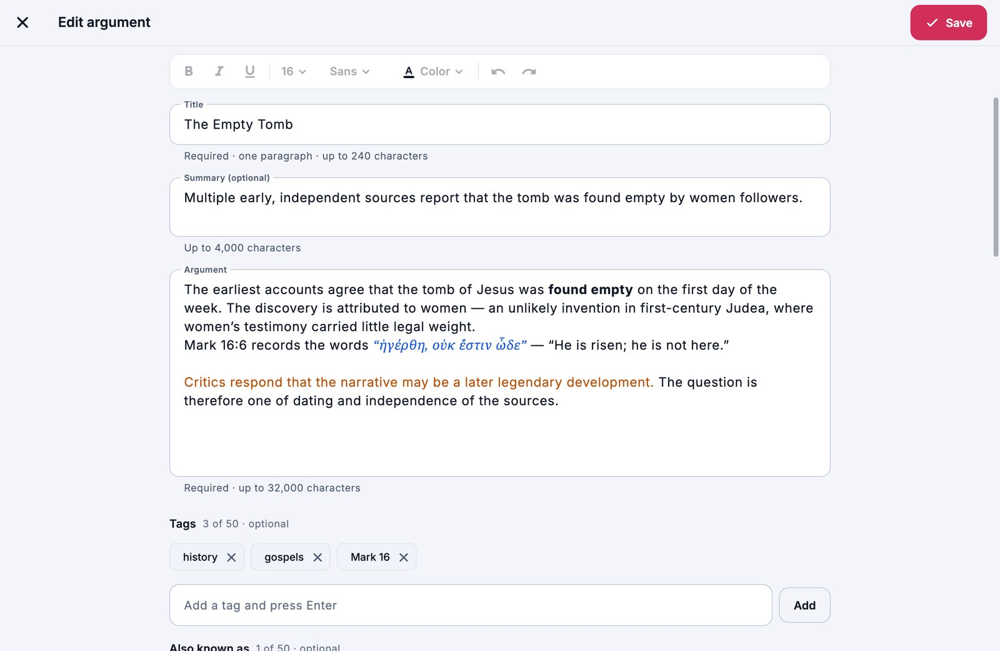
- 1Close the editor. If you have unsaved changes, it asks whether to save or discard them.
- 2Formatting for the field you’re typing in: bold, italic, underline, size, font and color, plus undo and redo. ⌘B/Ctrl+B, I and U work too.
- 3Title (required).
- 4Summary: one or two sentences shown at the top of the argument and in lists (optional).
- 5Argument: the full text (required). Greek, Hebrew and Arabic display correctly; a paragraph that starts in Hebrew or Arabic runs right to left.
- 6Tags and Also known as: type one and press Enter. Click a tag to change it, or its × to remove it.
- 7Save. If something is missing, a message at the top says what to fix.
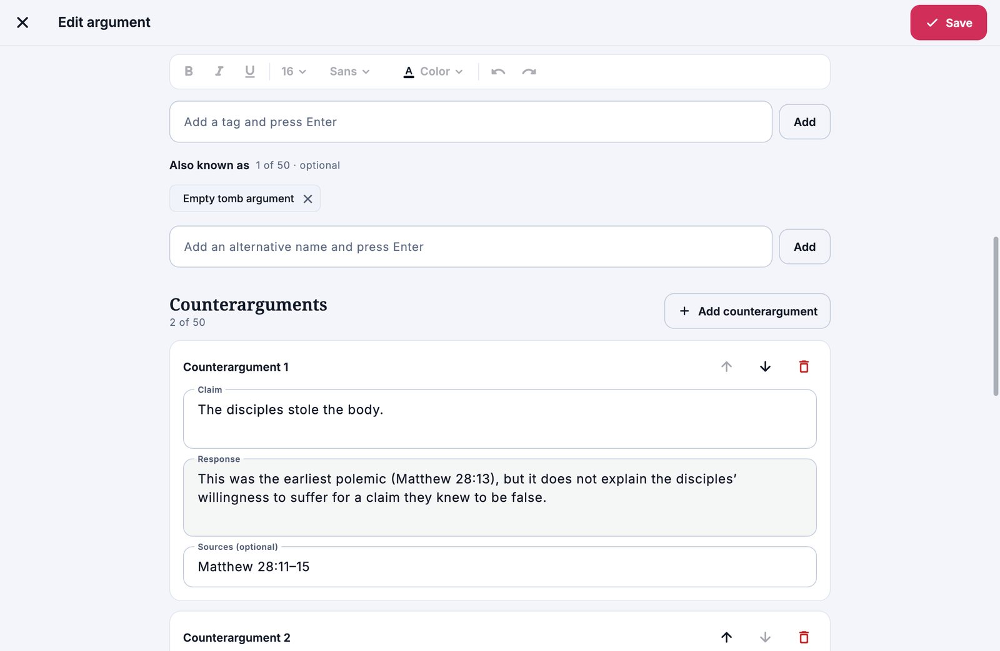
- 1Add counterargument adds a Claim, Response and Sources box. Further down, Add citation adds a source, an optional quotation and an optional web link.
- 2Move up, move down and remove. If you remove one by mistake, click Undo in the message that appears.
Unsaved work is kept as a draft. If the app closes before you save, it offers to restore your changes the next time you open the argument, or shows the draft at the top of the topic.
Renaming, moving, reordering and deleting
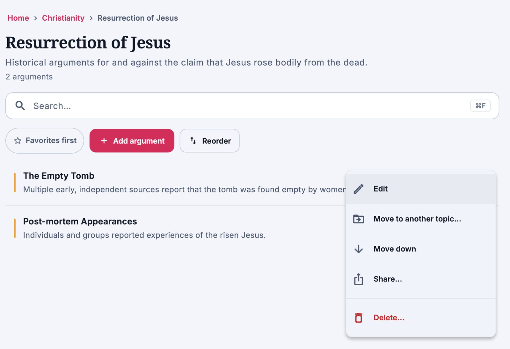
- Click an item’s ⋯ or ⋮ button, or right-click it, for its menu.
- Move to another topic… moves an argument anywhere in your library.
- Reorder (above each list) lets you arrange everything at once, by dragging or with the arrows.
- Delete… always asks first and says exactly what will be removed.
5. Your phone Both
Pair your phone with your computer once. After that, your phone fetches the latest library whenever you tap Check for update. Both must be on the same Wi-Fi, and nothing goes through the internet.
Pairing (once)
- Computer Click Sync at the top, then Pair a phone. A code appears. Keep this screen open.
- Phone Tap the Sync button at the top (the two arrows), then Scan the computer’s code and point the camera at the code. If you can’t scan, tap Enter the code manually and type the address and code shown under it.
- Compare the numbers. Both screens now show the same six-digit number.
- Confirm on both, in either order: Codes match on the phone and Confirm pairing on the computer. If the numbers are different, choose Codes don’t match instead.
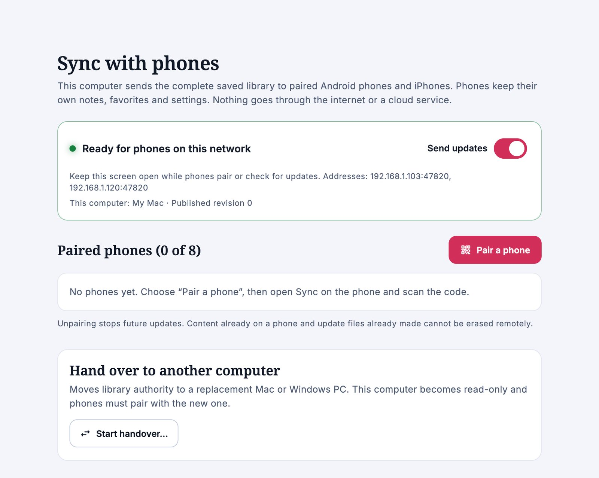
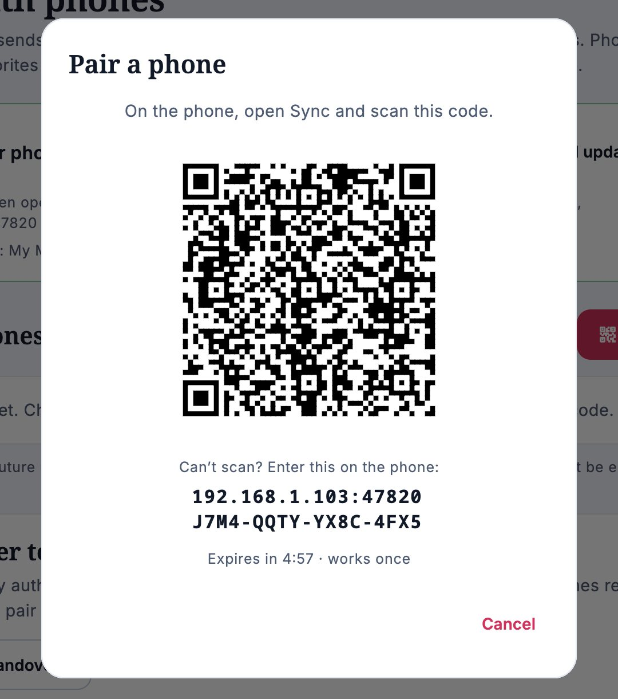
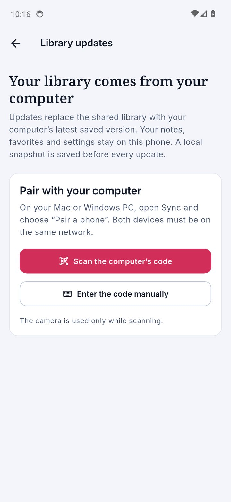
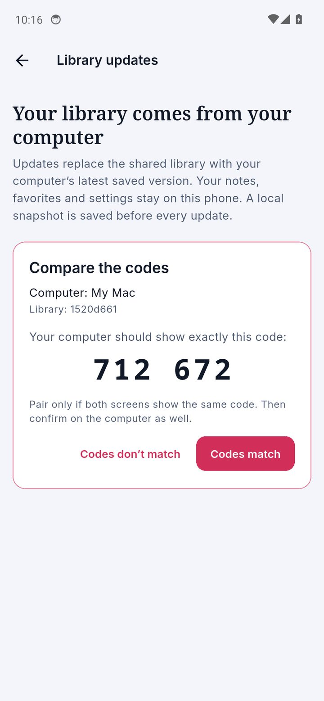
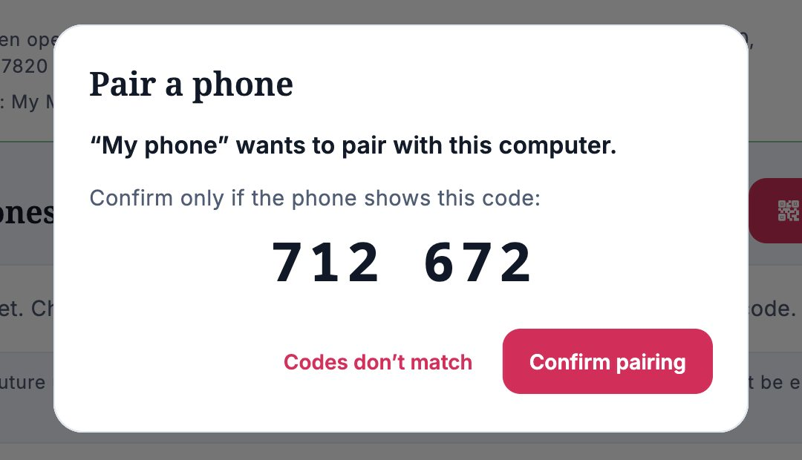
The code works once and expires after five minutes; if it runs out, click Pair a phone again. On Windows, if a firewall message appears, allow the app on private networks. On iPhone, allow the camera and Local Network access when asked.
Getting the latest library
- Computer Open Sync and leave it open. Updates only travel while this screen is open.
- Phone Open Sync and tap Check for update.
- The phone shows what will change: how many topics and arguments are added, changed or removed. Your notes and favorites are kept; if an argument you wrote a note on was removed, it tells you before anything happens.
- Tap Apply update. A safety copy of the phone’s library is saved first.
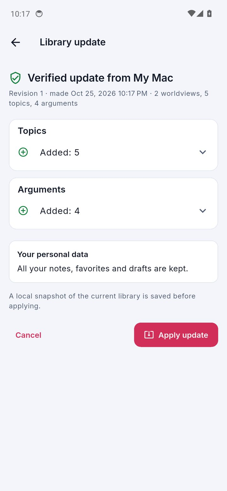
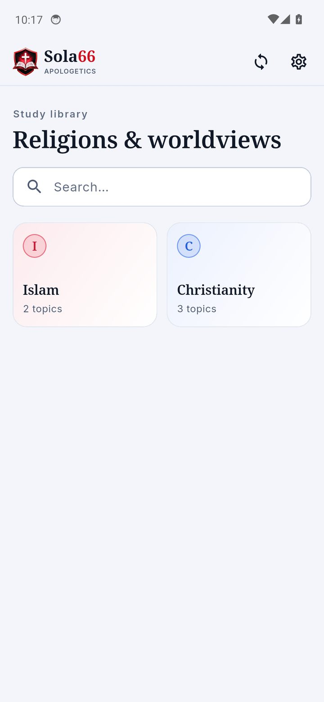
No shared Wi-Fi? On the computer’s Sync screen, open the paired phone’s ⋯ menu and choose Save update file for this phone…. Send that file to the phone, then on the phone tap Open an update file…. Only that phone can open it.
One computer can send to up to eight phones. Got a new computer? Hand over to another computer (in Settings) walks you through moving your library across; your phones then pair with the new one.
7. Backups and safety copies Both
Two kinds of protection: backups you make yourself, and safety copies the app makes automatically.
Private backups
- Go to Settings › Create full private backup.
- Choose a password of at least 12 characters, and type it twice.
- Click Create encrypted backup and save the file somewhere safe, such as a USB stick or another computer.
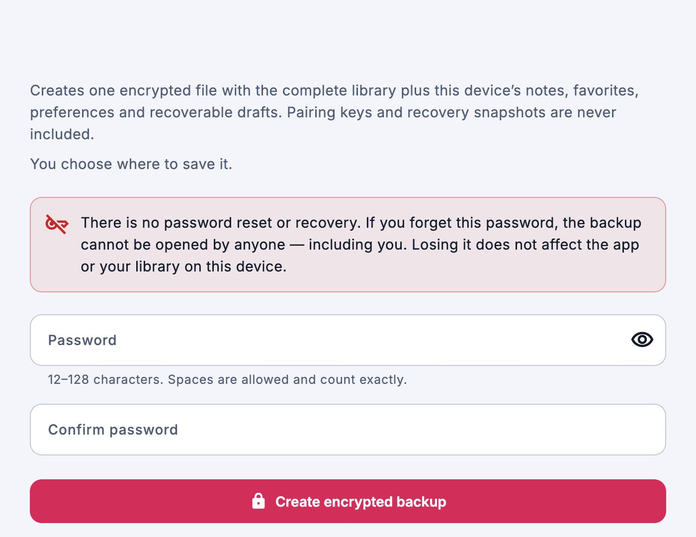
Keep your password safe. There is no way to reset it, and without it nobody can open the backup, including you.
A backup holds your whole library plus this device’s notes, favorites and settings. To use it, go to Settings › Restore from backup, choose the file and enter the password. The app shows what’s inside before anything changes.
On Android, backups and PDFs are saved in Downloads › Sola66 Apologetics. On iPhone, you choose where in the Files app.
Local snapshots (automatic)
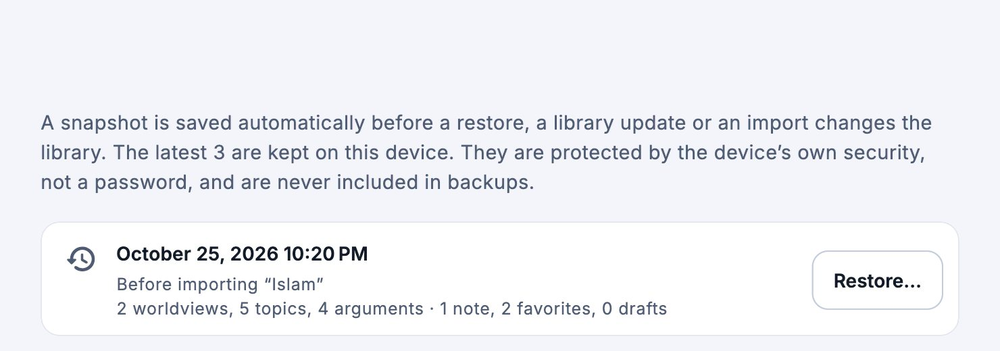
Before a restore, a library update or an import changes your library, the app quietly saves a snapshot. The latest three are kept in Settings › Local snapshots. If something went wrong, choose Restore… on the snapshot from just before it.
8. Settings and help Both
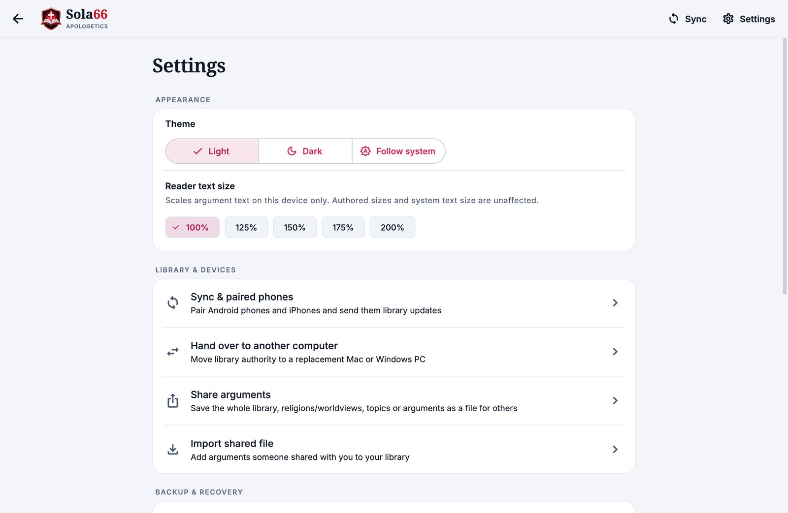
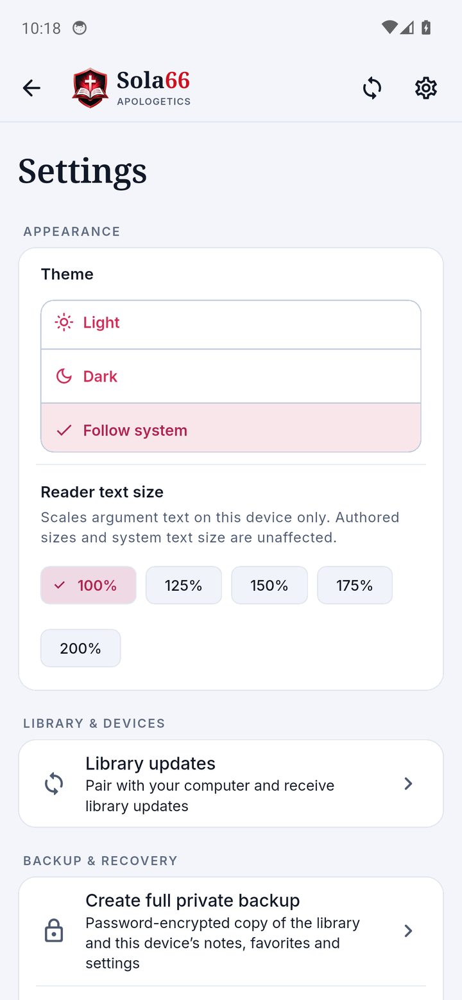
- 1Theme: Light, Dark, or Follow system to match your device.
- 2Reader text size for argument text on this device.
- 3Library & devices: Sync and pairing on computers, plus sharing and importing; Library updates on phones.
Further down: Backup & recovery (part 7), then Privacy, Help (short reminders inside the app) and Report a problem. From the next version, How to use the app at the top of Settings opens this guide.
Something not working? Settings › Report a problem opens a short form in your browser, with the app version and your kind of device filled in. Describe what happened, and add your email if you’d like a reply.
9. Quick answers
My phone can’t find my computer
Check that both are on the same Wi-Fi and that the computer’s Sync screen is open with Send updates switched on.
On Windows, allow the app through the firewall on private networks, and set your Wi-Fi to Private. On iPhone, check Settings › Sola66 › Local Network.
Some guest or work networks block devices from seeing each other; use an update file instead (part 5).
Why can’t I edit on my phone?
Phones read the library your computer sends them, so your computer is the one place where the library is written. That keeps every device in step. You can still add personal notes and favorites on your phone.
Are my notes and favorites sent anywhere?
No. They stay on the device where you made them. They’re included only in the password-protected backups you create yourself.
Does the app need the internet?
No. Everything works offline. Pairing and updates use your own Wi-Fi, never the internet. The only things that open in your browser are web links in sources, this guide and the Report a problem form, and only when you tap them.
I forgot my backup password
Unfortunately the backup can’t be opened without it; there’s no reset. Your library on your devices isn’t affected. Make a new backup with a password you’ll remember.
I deleted something by mistake
A removed counterargument or citation can be brought back with Undo straight away. If you restored, updated or imported something by mistake, use Settings › Local snapshots. Otherwise, restore your latest private backup.
How do I get a newer version of the app?
Download and install it from the download page the same way as the first time. Your library, notes and favorites are kept.